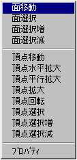
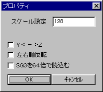

★Graphic Tools Guide
★3DMEユーザーズマニュアル
★Graphic Tools Guide
★3DMEユーザーズマニュアル
| コマンド名 | 機 能 |
|---|---|
| 新規(Ctrl+N) | 新規モデルデータの作製 |
| 開く(Ctrl+O) | 既存モデルデータのロード |
| 保存 | モデルデータ(*.pof)の保存 |
| 別名で保存 | *.MDL,*.ATA,*.MDB形式の保存(*1) |
| 別窓追加(Ctrl+W) | 別視点ウインドウの追加 |
| グリッドサイズ変更 | モデルデータを置くマスのサイズを変更 |
| 終了(Ctrl+Q) | 3DME.EXEの終了 |
| コマンド名 | 機 能 |
|---|---|
| 取り消し(Ctrl+U) | 直前に行った作業のやりなおし(UNDO) |
| 切り取り | 選択したモデルの削除 |
| コピー | 選択したモデルのコピー |
| 張り付け | 「切り取り」「コピー」で指定したモデルのペースト |
| ポリゴン追加 | 正方形ポリゴンの追加 |
| ＢＯＸ追加 | 立方体の追加 |
| ６角柱追加 | 六角柱追加(四角形ポリゴンで構成されている) |
| ８角柱追加 | 八角柱追加(四角形ポリゴンで構成されている) |
| ４点指定ポリゴン追加 | 任意に選択した４頂点で構成されるポリゴンを作成 |
| 頂点移動 | 選択した頂点の移動(複数選択可) |
| クリンナップ | 同一平面上にある複数のポリゴンを削除 |
| 頂点クリンナップ | 同一座標にある頂点の統一 |
| 頂点クリンナップ設定 | 何ドットまで近くにある頂点をクリンナップするかの設定 |
| 頂点クロス(0-1-2-3) | ４点指定でねじれたポリゴンが作成された場合に使用する |
| 頂点クロス(0-2-1-3) | ４点指定でねじれたポリゴンが作成された場合に使用する |
| 自動グループ分割 | 各々のグリッドにどのモデルが存在するかを計算する(*2) |
| プロパティ | スケール設定、３Ｄ空間上のＹ座標とＺ座標を入れ替え、左右軸回転、SG3を64倍で読み込む設定を行います(マウス右ボタンクリックで現れるメニューの「プロパティ」と同じです) |
| コマンド名 | 機 能 |
|---|---|
| 選択解除 | 選択指定したモデルの選択解除 |
| 選択範囲反転 | 選択したモデルと選択していないモデルとを入れ替える |
| ＰＰ | 選択した頂点をコピー＆ペーストする。その後、移動・回転などを行う |
| マージ | 選択した複数の頂点を一つにまとめる |
| パーツ編集 | このコマンドを選択すると新規にウインドウが開き、あらかじめ選択したパーツを独立したPofデータとしてセーブできる。同じデータを複数使う場合にいったんこのパーツ編集でデータをセーブし、その後呼び出してコピー＆ペーストという使い方ができる。なおこのウインドウでの視点変換はPerspective用の回転コマンドを使用する |
| コマンド名 | 機 能 |
|---|---|
| アトリビュート | 選択したポリゴンの特性を設定 |
| グループ編集 | 選択したポリゴンを |
| テクスチャーリスト | モデルデータに使用するテクスチャーのリストを開く |
| 重ねて表示 | 各ウインドウを重ねて表示する |
| 上下に並べて表示 | 各ウインドウを上下に並べて表示する |
| 全てを閉じる | 全ウインドウをクローズする |
| ウインドウバックカラー指定 | ウインドウの背景色を設定する |
| コマンド名 | 機 能 |
|---|---|
| バージョン | 3DME.EXEのバージョンを表示する |
| コマンド名 | 機 能 |
|---|---|
| 元のサイズに戻す | ウインドウを元のサイズに戻す |
| 移動 | ウインドウを移動する |
| サイズ変更 | ウインドウのサイズを変更する |
| 最小化 | ウインドウを最小にする |
| 最大化 | ウインドウを最大にする |
| 閉じる | ウインドウを閉じる |
| TexCheck | テクスチャーを貼った状態のモデルを表示する |
| SelectCheck | 選択した部分を、テクスチャー付きで表示する |
| Front | マップ前方から見た視点にする |
| Top | マップ上方から見た視点にする |
| Right | マップ右方向から見た視点にする |
| PersPective | 様々な角度からマップを見る視点にする |
| PesPective2 | 適度にポリゴンを色づけしてPersPective視点で見る |


| コマンド名 | 機 能 |
|---|---|
| スケール設定 | １マスの大きさの設定を変更します(単位：ドット) |
| Ｙ＜−＞Ｚ | ３Ｄ空間上のＹ座標とＺ座標を入れ替える |
| 左右軸回転 | チェックすることにより右上が(0,0)になります |
| SG3を64倍で読み込む | *.SG3のデータを64倍のスケールで読み込む(SG3の読込み込む場合、Ver1.00と同じ読込み方法) |
★Graphic Tools Guide
★3DMEユーザーズマニュアル